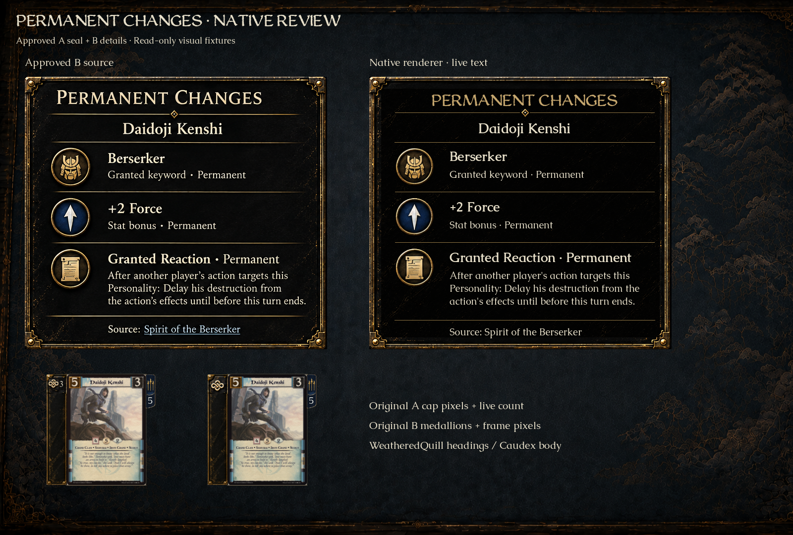
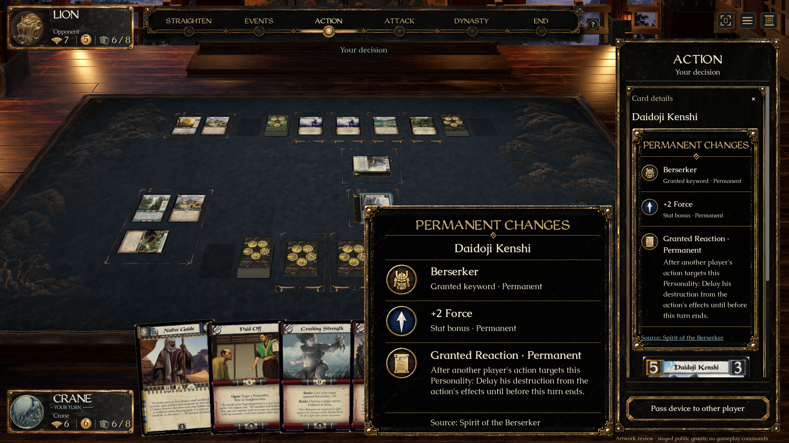
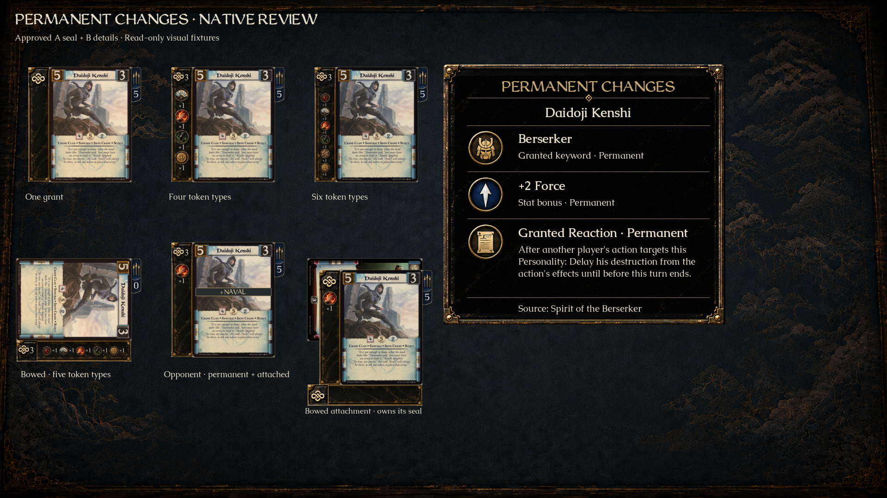
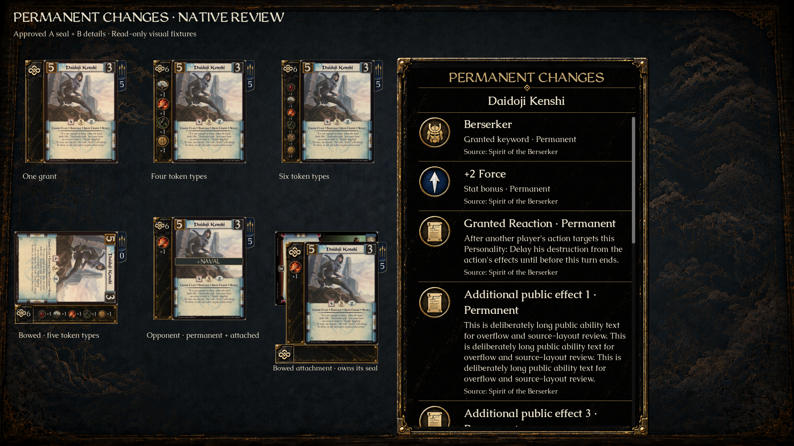
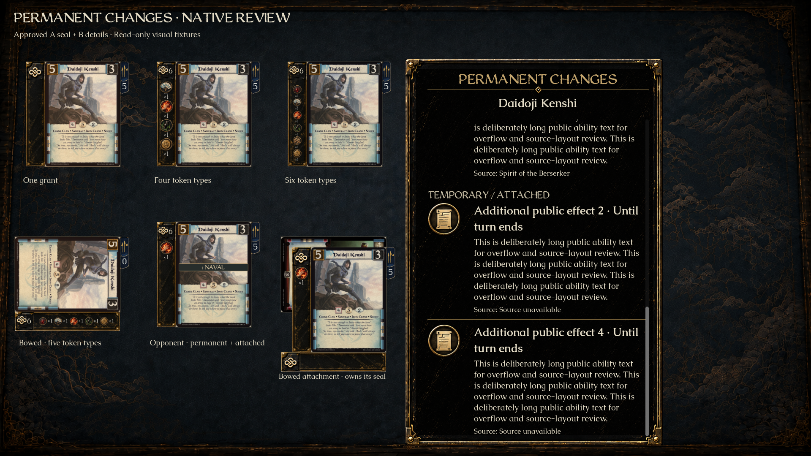

Permanent changes
A’s quiet seal, B’s icon-led details. Original gold ornament artwork, worn black lacquer, live Caudex text and WeatheredQuill headings.
These native captures use explicitly staged public grants so the complete approved design can be reviewed. The example’s +2 Force and Reaction do not make Spirit of the Berserker playable. Live play displays the engine’s actual public grants and durations.
Approved source beside the native renderer

Same 610 × 550 panel dimensions. The frame, knot and medallions use original source pixels; the type is live. The clean lacquer material is an imagegen derivation from B.
Original approved concept sheets
In the full game

Hover gives the full explanation. Click selects the card and places its changes first in the right inspector; public source links open that source without submitting a command.
Quiet at rest, detailed on request

Single-grant seals omit a number. Multiple grants use a live count; token amounts remain independent. Four token types retain normal size; five/six compact. The bowed attachment’s seal selects the attachment itself.
Readable when effects accumulate

Names and source are live; the frame stays within the window.
The final effects remain reachable. Permanent entries precede temporary/attached entries. The selected-card inspector is the scrollable reading surface in normal play.